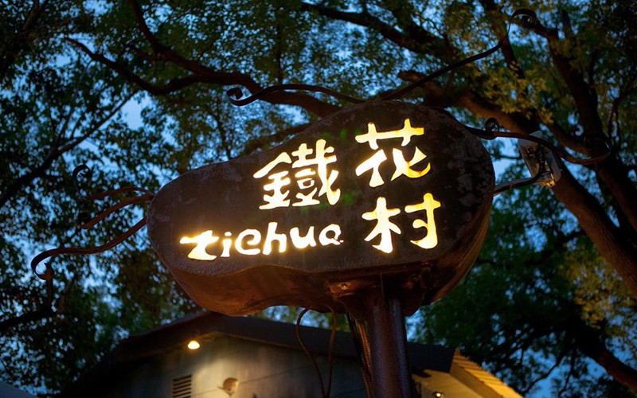
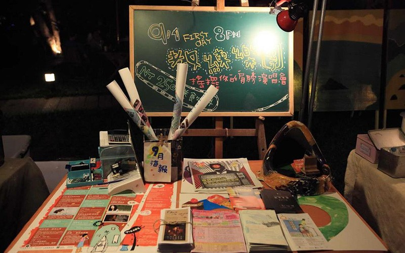
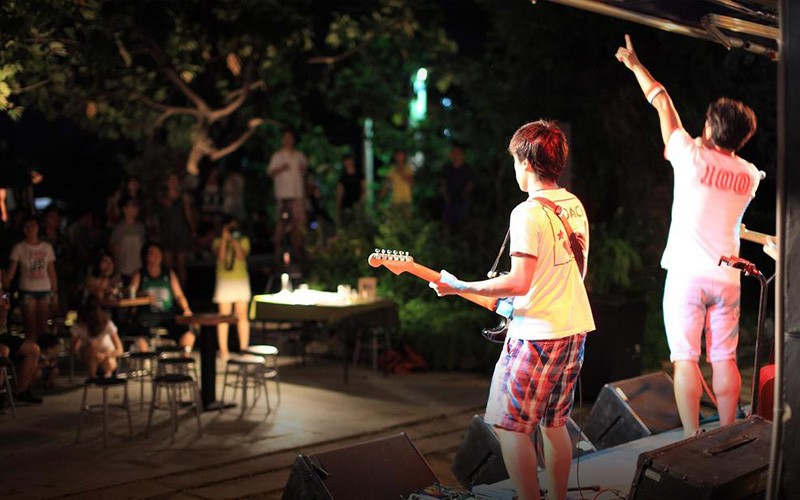
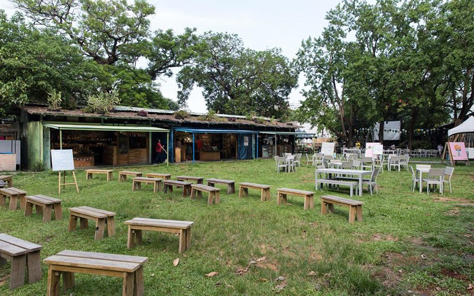
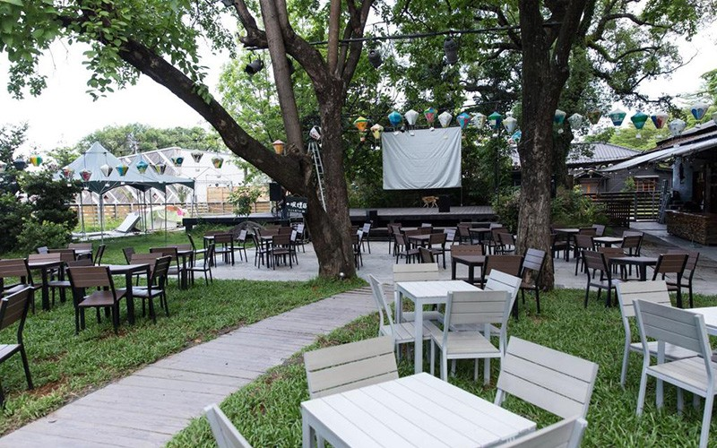
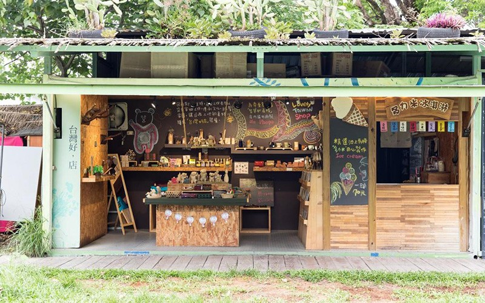
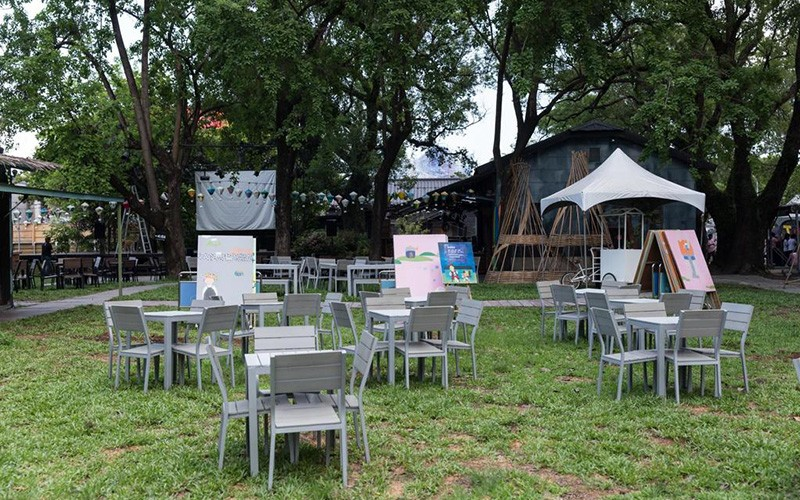
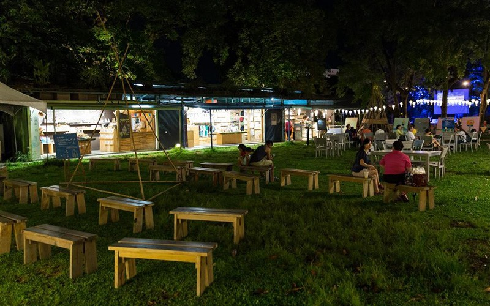
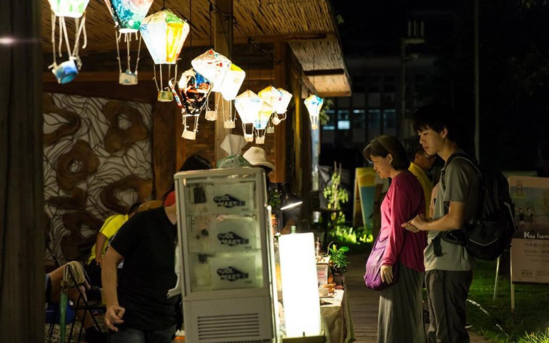
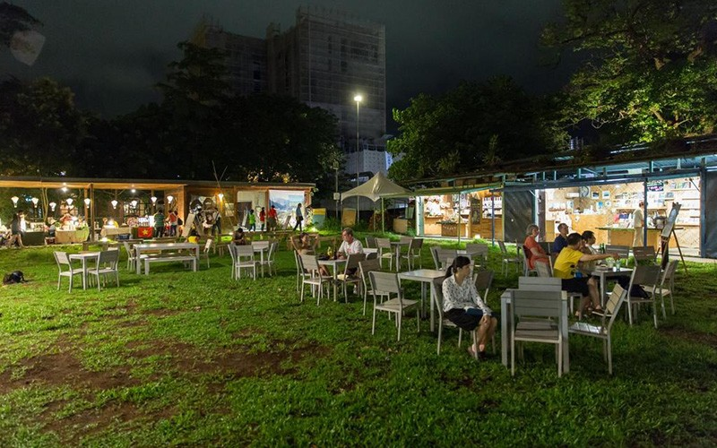
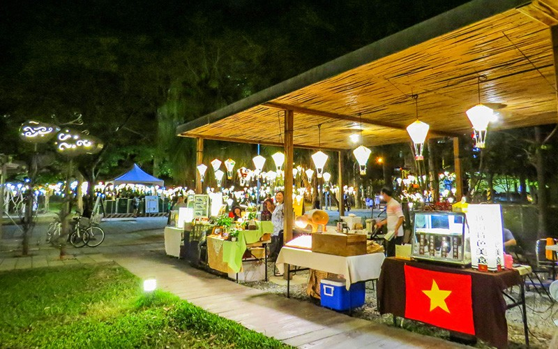
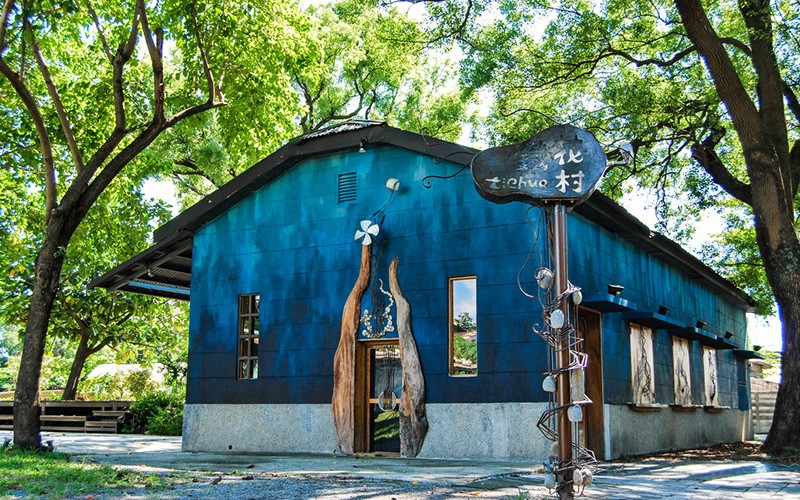
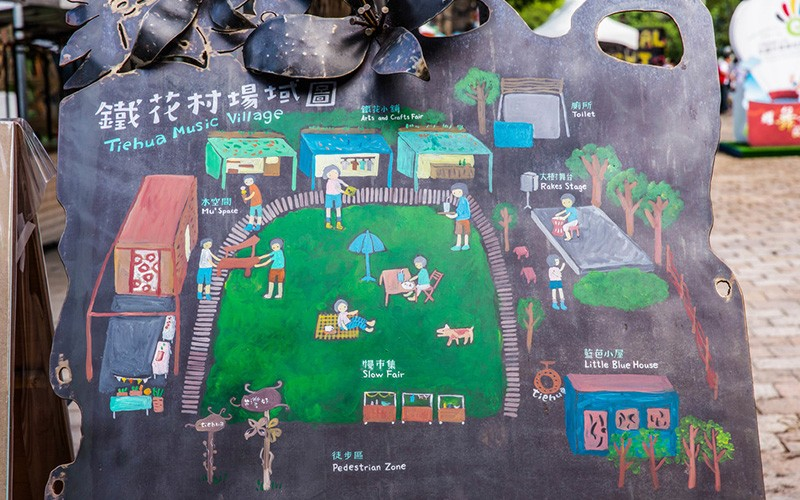
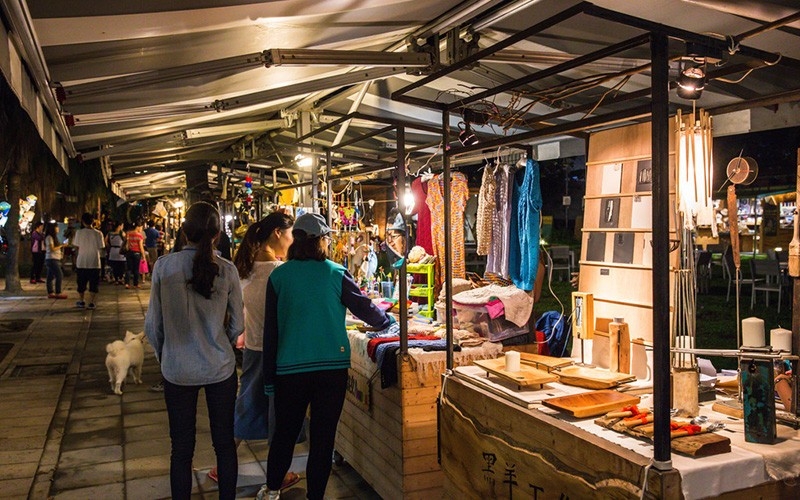
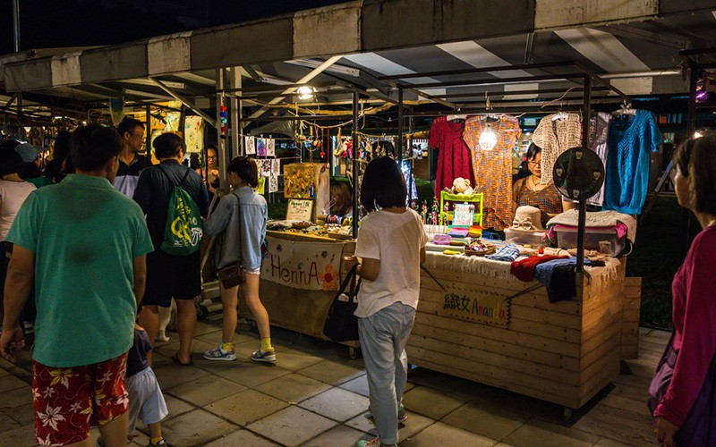
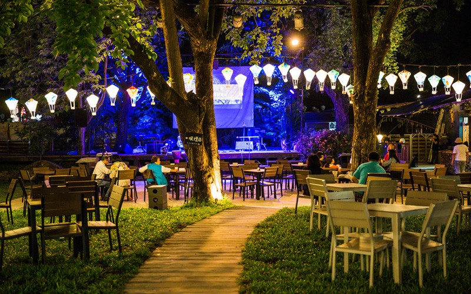
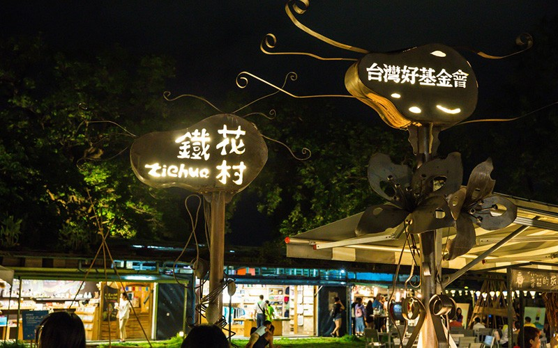
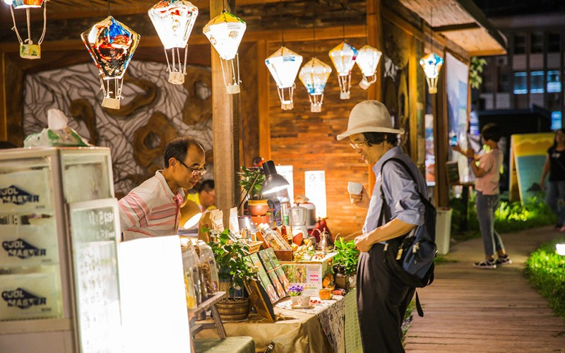
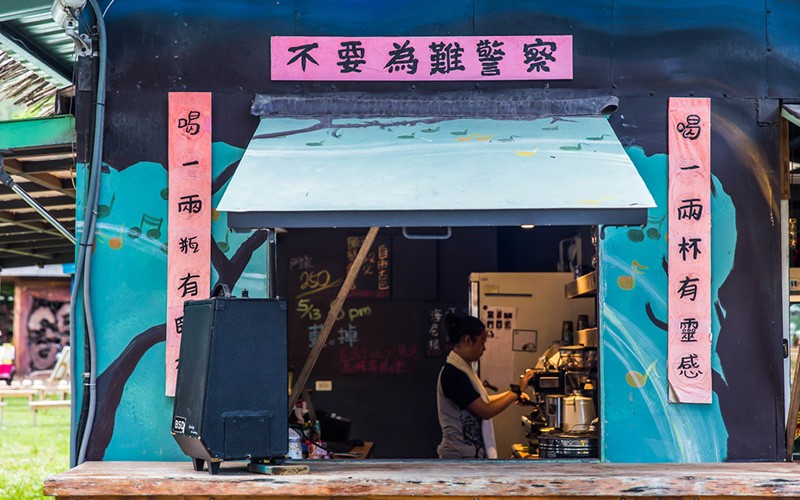
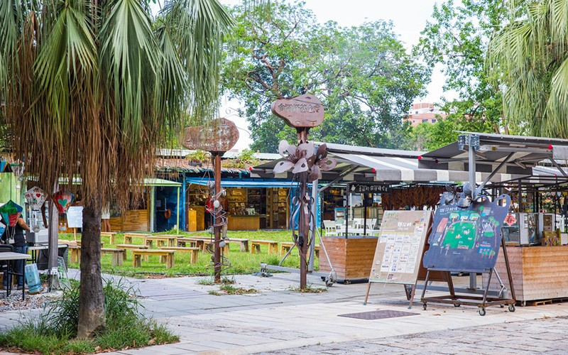
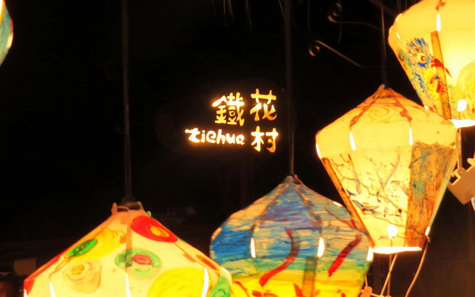
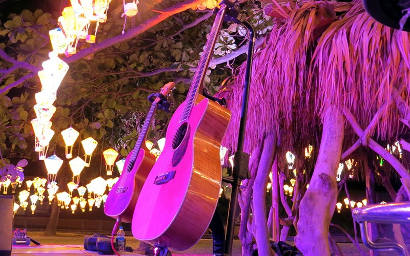
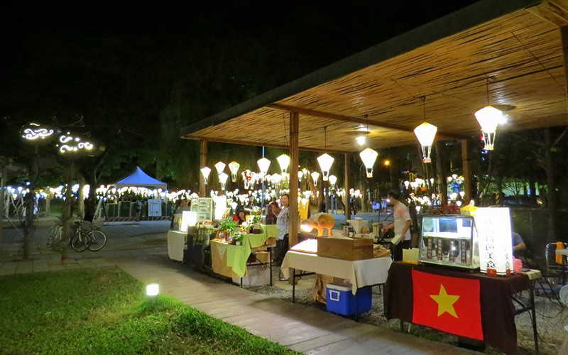
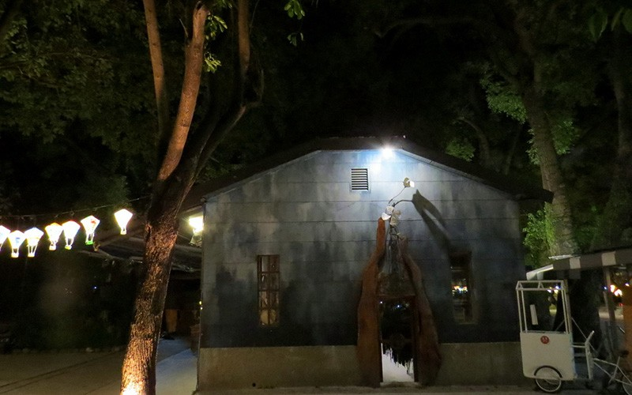
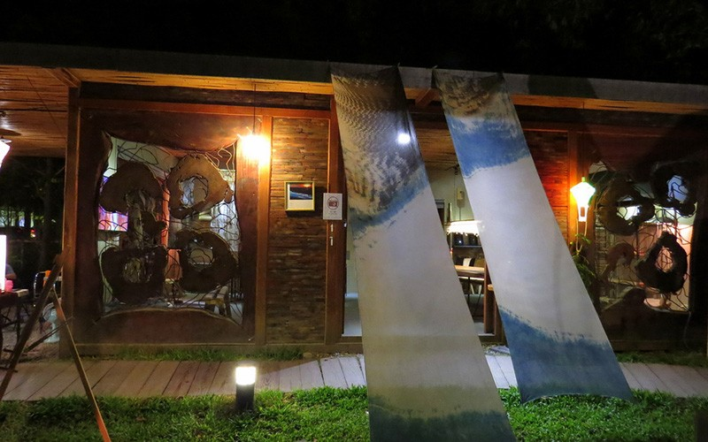
鐵花村音樂聚落
鐵花村音樂聚落為觀光局「國際光點計畫」的第一個正式營運據點，由臺東音樂人和藝術工作者共同打造的音樂聚落及在地發芽的慢市集，可說是臺東的音樂集散地，如茵的草地，高大的老樹，散發一股自在、悠然的氣息。
介紹
玩樂攻略
-彩繪熱氣球是熱門的拍照點
-不定時會舉辦手作課程、二手市集
-每週三至週日晚上有精彩的音樂表演
-在假日可逛來自臺東各地小農、手作達人組成的
臺東市的夜晚不寂寞，來到由臺鐵貨倉宿舍改造的鐵花村音樂聚落，聽著原民歌手高亢清亮的創作，享受山海文化孕育出澎湃的歌聲，喝上一杯鐵花吧的臺東特調，偷得浮生半日閒。而一旁的假日慢市集，販售著獨特的手作小物、農特產品，不妨與創作者、小農們聊聊天，感受臺東人的熱情與樂活自在的氛圍。
在草地上聆聽音樂的生命力
音樂演出時段：週三至週六20:00-22:00；週日19:30-21:00
「鐵花一開，音樂就來！」這是鐵花村的目標與理想，擔任音樂總監的鄭捷任先生是這裡的音樂推手，對於音樂，他有著堅持與理想，期望能在這片土地，開出更茂盛美好的音樂花朵。
在鐵花村的演出節目單上，可以看到許多原住民音樂人的名字，由於臺東是原住民音樂人才及創作能量最豐沛的地方，為了培育、珍惜這個土地上的音樂資產，鐵花村給了臺東原住民創作人才一個自由發表的空間。
夜晚的鐵花村，月光下的創作人正在嘶吼關於生命的領悟，或著低吟輕唱他們的故事，在這裡，請用盡全身的感官細胞，跟著節奏搖擺，音樂，沒有國界。
充滿特色的在地小物-鐵花好店
營業時間：週三至週日16:00-22:00
除了假日的慢市集可以逛逛之外，平日的晚上也能逛逛鐵花好店，來自臺灣各地手作創作者的自創商品，以及原創有聲出版品，讓人可以在鐵花村演出以的時間和場域，認識島嶼的音樂與故事！
放慢忙碌的步調-假日慢市集
市集營業時間：週五18:00-22:00；週六日17:00-22:00
以在地藝術創作結合大片綠草地的鐵花村，自然悠閒，高大如傘的老樹，吸引不少遊人佇足觀賞。假日的慢市集，你可以放慢忙碌的步調，買到獨特的手作小物、美味的點心，以及健康的在地新鮮食材，停下腳步與這些創作者和小農們閒聊，聽聽每件產品背後動人的小故事。
特色
◆ 彩繪熱氣球
廣受好評的彩繪熱氣球，就位於鐵花村入口處以及內部，從臺東故事館（誠品書局）以及星巴克就能看到可愛的彩繪熱氣球海唷！每天晚上6點至9點（雨天除外）都能看到。
【資料來源：臺東觀光旅遊網】
鐵花村音樂聚落鐵花村音樂聚落為觀光局「國際光點計畫」的第一個正式營運據點，由臺東音樂人和藝術工作者共同打造的音樂聚落及在地發芽的慢市集，可說是臺東的音樂集散地，如茵的草地，高大的老樹，散發一股自在、悠然的氣息。介紹玩樂攻略-彩繪熱氣球是熱門的拍照點-不定時會舉辦手作課程、二手市集-每週三至週日晚上有精彩的音樂表演-在假日可逛來自臺東各地小農、手作達人組成的慢市集臺東市的夜晚不寂寞，來到由臺鐵貨倉宿舍改造的鐵花村音樂聚落，聽著原民歌手高亢清亮的創作，享受山海文化孕育出澎湃的歌聲，喝上一杯鐵花吧的臺東特調，偷得浮生半日閒。而一旁的假日慢市集，販售著獨特的手作小物、農特產品，不妨與創作者、小農們聊聊天，感受臺東人的熱情與樂活自在的氛圍。在草地上聆聽音樂的生命力音樂演出時段：週三至週六20:00-22:00；週日19:30-21:00「鐵花一開，音樂就來！」這是鐵花村的目標與理想，擔任音樂總監的鄭捷任先生是這裡的音樂推手，對於音樂，他有著堅持與理想，期望能在這片土地，開出更茂盛美好的音樂花朵。在鐵花村的演出節目單上，可以看到許多原住民音樂人的名字，由於臺東是原住民音樂人才及創作能量最豐沛的地方，為了培育、珍惜這個土地上的音樂資產，鐵花村給了臺東原住民創作人才一個自由發表的空間。夜晚的鐵花村，月光下的創作人正在嘶吼關於生命的領悟，或著低吟輕唱他們的故事，在這裡，請用盡全身的感官細胞，跟著節奏搖擺，音樂，沒有國界。充滿特色的在地小物-鐵花好店營業時間：週三至週日16:00-22:00除了假日的慢市集可以逛逛之外，平日的晚上也能逛逛鐵花好店，來自臺灣各地手作創作者的自創商品，以及原創有聲出版品，讓人可以在鐵花村演出以的時間和場域，認識島嶼的音樂與故事！放慢忙碌的步調-假日慢市集市集營業時間：週五18:00-22:00；週六日17:00-22:00以在地藝術創作結合大片綠草地的鐵花村，自然悠閒，高大如傘的老樹，吸引不少遊人佇足觀賞。假日的慢市集，你可以放慢忙碌的步調，買到獨特的手作小物、美味的點心，以及健康的在地新鮮食材，停下腳步與這些創作者和小農們閒聊，聽聽每件產品背後動人的小故事。
Tiehua Music Village Tiehua Music Village is the first officially operating location in the Taiwan Tourism Bureau’s International Spotlight Program. The music village built by the musicians and artists in Taitung and the Tiehua Market that developed locally can be considered the center for distributing music in Taitung. The comfortable grass field and towering old trees throughout the village give off relaxing vibes. Introduction How to Have Fun -Painted hot air balloons are popular for taking photos -Craft lessons and second-hand markets are held randomly. -Splendid musical performances on every Wednesday through Sunday night -Tiehua Market that features local produce and crafts is opened on holidays. Nights in Taitung City are not lonely. Come to the Tiehua Music Village, which was transformed from the freight houses and dormitories of Taiwan Railways Administration into a place where you can listen to resounding aboriginal singing. Enjoy the energetic voices nurtured by the mountain and ocean culture, drink a Taitung specialty cocktail at Tiehua bar, and take full advantage of your leisure time. Also, the Tiehua Market sells unique crafts, produce, and specialty foods. Chat with the crafters and small farmers and feel the passion of people from Taitung. Listen to Powerful Music on the Grass Hours: Wednesday through Saturday 20:00-22:00; Sunday 19:30-21:00 “When Tiehua blooms, the music comes!” This is the inspiration for Tiehua Music Village. The director of music and promoter, Mr. Cheng Chieh-jen, is persistent and creative. He expects to grow beautiful flowers of music in this place. Many aboriginal musicians are listed on Tiehua Music Village’s performance schedule. This is because Taitung is a place where aboriginal music and originality abound, and Tiehua Music Village gives the aboriginal musicians in Taitung a space to freely express themselves. At night in Tiehua Music Village, singers are either shouting their understanding of life or gently singing their stories under the moonlight. Enjoy the music with all your senses, and feel free to sway along with the rhythms. Music is a universal language that speaks to us all. Featured Local Products - Tiehua Good Store Business hours: Wednesday through Sunday 16:00-22:00 Besides shopping at the Tiehua Market on the holidays, visitors can also check out Tiehua Good Store on weekday nights. The store sells crafts created by creators from around Taiwan and original audio publications that teach visitors about the island’s music and history. Take Time to Relax - Tiehua Market Market hours: Friday 18:00-22:00; Saturday and Sunday 17:00-22:00 Integrating local art and vast grass fields, Tiehua Music Village is natural and relaxing. The towering old trees are like big umbrellas and attract many tourists. At the Tiehua Market you can relax and buy some unique handcrafts, delicious snacks, and healthy local food. Stop and chat with the handcrafters and small farmers to learn the touching little stories behind every product.
鉄花村音楽集落 鉄花村音楽集落は、観光局「国際光点計画（国際シンボルスポット計画）」における最初の本格運営拠点です。台東のミュージシャンやアーティストが共に作り上げる音楽集落と、地元から生まれたスローマーケットがミックスする、いわば台東の音楽の集散地。緑のじゅうたんを敷き詰めたかのような草原や、空高くそびえる古樹などが自由でゆったりした雰囲気を生み出しています。 紹介 見どころ -カラフルな熱気球は人気の撮影スポット -手作り講座やフリーマーケットを不定期開催 -毎週水曜日から日曜日の夜には素敵な音楽ライブ -休日には台東各地の小規模農家や雑貨作り手によるスローマーケット 台東市は夜も寂しくありません。台湾鉄道倉庫宿舎を改造した鉄花村音楽集落では、原住民シンガーの高く澄んだ創作ミュージックが楽しめます。山と海の文化に育まれた豊かな歌声を聴きながら、鉄花バーの台東特製コーヒーを飲めば、一日の疲れがすっかり癒やされることでしょう。傍らの休日スローマーケットでは、オリジナル手作り雑貨や農産物が販売されています。雑貨作家や農家とおしゃべりながら、台東人の温かさ、ゆったりした雰囲気を感じてみてください。 草原で音楽の生命力に耳を傾ける 演奏時間：水曜日～土曜日20:00～22:00、日曜日19:30～21:00 「鉄花開けば音楽来たる！」これは鉄花村の目標であり理想です。この鉄花村の音楽を世に広めているのが音楽ディレクターの鄭捷任さん。音楽に対するこだわりと理想を持ち、この地でより美しい音楽の花をたくさん咲かせたいと考えています。 鉄花村の演奏プログラムには、原住民アーティストの名が数多く見られます。台東は、原住民のミュージシャンがもっとも多く、創作エネルギーが豊かな場所。この地の音楽資産を大切に育てるため、鉄花村は台東の原住民の創り手に自由な発表の場を与えているのです。 夜の鉄花村では月光の下、ミュージシャンらが、あるいは生命の悟りを叫び、あるいは彼らの物語を静かに歌います。全身の感覚を研ぎ澄まし、リズムに合わせて体を動かしてみてください。音楽には国境はありません。 特色あふれる地元の小物-鉄花好店 営業時間：水曜日～日曜日16:00～22:00 休日ならスローマーケット、平日夜なら鉄花好店へ。ここでは、台湾各地のハンドクラフト作家のオリジナル作品やCDなどを販売しています。鉄花村のライブの傍ら、鉄花好店で島の音楽や物語を知ることができます。 ゆったり楽しむ-休日スローマーケット 営業時間：金曜日18:00～22:00、土日17:00～22:00 一面の緑の草原と地元のアートが結びついた鉄花村は、ゆったりした自然に囲まれています。傘のように枝を広げる巨大な古木は、多くの人々が足を止めて観賞していきます。休日に開催されるスローマーケットには、オリジナルの手作り雑貨やおいしいスイーツ、ヘルシーな地元の新鮮食材が並ぶので、どうぞゆっくりお買い物を。足を止めて創り手や農家とおしゃべりし、商品の背後にある感動的なミニストーリーを聞いてみてはいかがでしょうか。